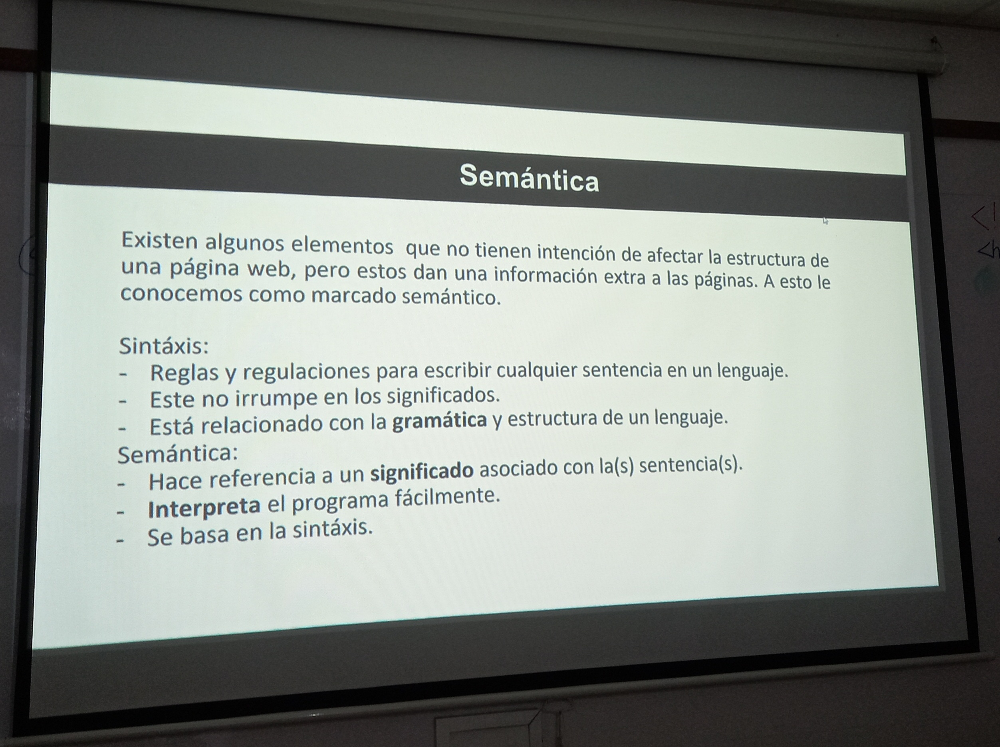

Sesión 3:
En la tercerca sesión de clase, aprendí sobre las reglas de semántica y sintaxis, y como puede estas pueden afectar la estructura de una página web. En el caso de la sintaxis, no interrumpe los significados y está relacionado más con la parte gramatical. En la semántica se hace referencia a un significado asociado, que el programa interpreta en base a la sintaxis. Asimismo, aprendí sobre nuevas etiquetas para poder estructurar mi bitácora.
